Syllabus Topics
- 1.1 Traffic volume studies
- 1.2 Traffic speed and delay studies
- 1.3 Origin and destination study
- 1.4 Basic traffic flow parameters
- 1.5 Traffic capacity and level of service
- 1.6 Parking studies
- 1.7 Crash studies
Introduction to Traffic Studies
Course Objectives and Syllabus
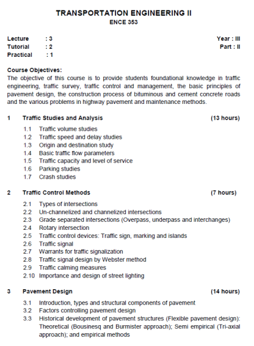
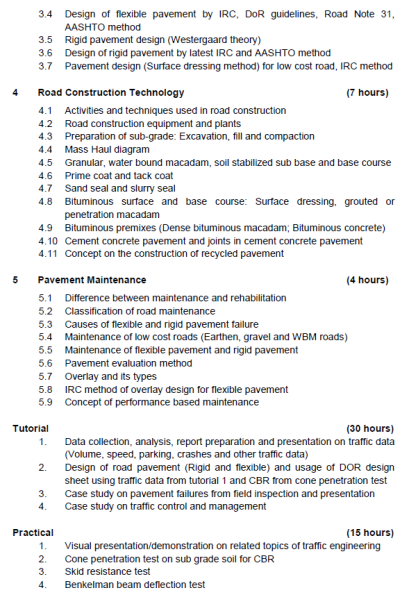
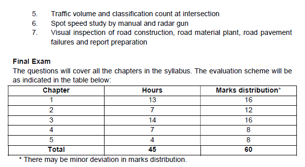
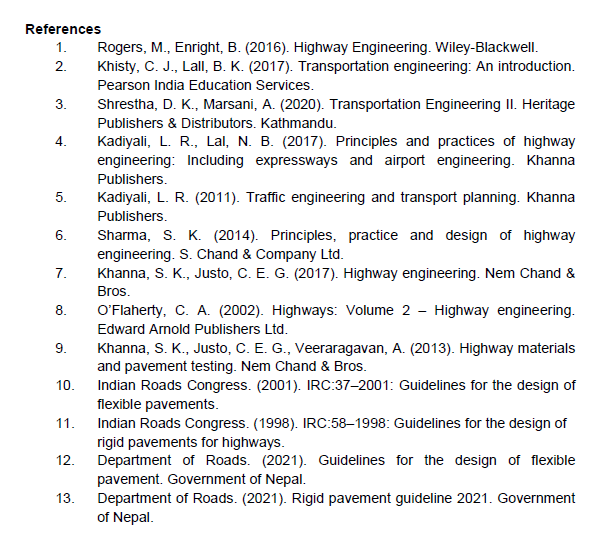
Internal evaluation: Attendance (4), Assignments and traffic
data collection analysis reporting, pavement design (10) Others case study group projects for pavement failure and traffic control and management (6), Midterms (20)
Traffic Studies
- Gathering of traffic data and its inventories
- Help in planning, geometric design, traffic control and economic studies for safe and efficient movements of traffic
Need of Traffic Studies
- To investigate the current trend of traffic characteristics
- To evaluate traffic performance of the system
- To predict future traffic behavior
- To understand the needs and choices of public private sector for mobility
- To assess and prioritize potential improvements (new developments, alteration in design/traffic control and regulations etc.)
Various Traffic Studies
- Traffic Volume Studies
- Traffic Speed and Delay Studies
- Origin and Destination Study
- Basic Traffic Flow Parameters
- Traffic Capacity and Level of Service
- Parking Studies
- Crash Studies
1.1 Traffic Volume Studies
Past Exam Questions on this Topic
- a) The traffic counts for an approach from 8:30 AM to 10:30 AM (in 15-minute intervals) are given in the table below. Determine (i) the design flow rate for the approach, (ii) the peak hourly volume, (iii) the peak hour and (iv) the peak hour factor. [4+4] b) Travel time data (in seconds) for 14 vehicles traversing a two kilometre road segment are: 85.7, 78.3, 80.9, 93.5, 76.6, 86.7, 80, 90, 96, 84.7, 72, 79.1, 120, 97.3. Estimate (i) the time mean speed, (ii) the space mean speed and (iii) the average density of the above traffic stream, if the mean headway is 8 sec. [2+6] (2080 Baishakh, Q2)
Approach volume counts (15-min intervals) Time Count (veh) 8:30–8:45 500 8:45–9:00 390 9:00–9:15 300 9:15–9:30 300 9:30–9:45 260 9:45–10:00 350 10:00–10:15 400 10:15–10:30 490 Solution
(a) Peak-hour analysis. 15-min counts (veh): 500, 390, 300, 300, 260, 350, 400, 490.
Sliding one-hour (4-interval) totals: 1490, 1250, 1210, 1310, 1500. Maximum = 1500 (09:30-10:30).
- Peak hour = 09:30-10:30 → Peak hourly volume = 1500 veh/h
- Highest 15-min count = 490 → design (peak) flow rate = 490×4 = 1960 veh/h
- PHF = PHV/(4×V15,max) = 1500/(4×490) = 0.77
(b) Speeds from travel time (L = 2 km, 14 vehicles). Σt = 1220.8 s → mean t = 87.2 s.
- Space mean speed = L/t̄ = 2000/87.2 = 22.9 m/s = 82.6 km/h
- Time mean speed = mean of spot speeds (vi = 7200/ti) ≈ 83.9 km/h
- Mean headway h = 8 s → q = 3600/8 = 450 veh/h; density k = q/Vs = 450/82.6 = 5.4 veh/km
- A car driver was driving along an 800 m road. She counted the number of cars that she meets while driving southwards (Ns), the number of cars that overtake her while driving northward (No), and the number of cars that she overtakes while driving northward (Np), as shown in the table below. Find the average traffic flow and journey speed, given that she travels at a constant speed of 20 kmph. [8] (2082 Baishakh, Q4)
Moving-observer counts Run Cars met (driving south) Overtaking (driving north) Overtaken (driving north) 1 107 10 74 2 113 25 41 3 30 15 5 4 79 18 9 Solution
Moving-observer (floating-car) method. The driver travels at 20 km/h over L = 0.8 km, so each one-way trip time ta = tw = 0.8/20 = 0.04 h.
For the stream of interest: x = vehicles met while driving against it; y = (overtaking − overtaken) while driving with it. Flow q = (x + y)/(ta + tw); mean travel time t̄ = tw − y/q; journey speed = L/t̄.
Aggregating the four runs (Ns, No, Np): Σx = 107+113+30+79 = 329; Σ(No − Np) = (10−74)+(25−41)+(15−5)+(18−9) = −61; Σta = Σtw = 4×0.04 = 0.16 h.
q = (329 − 61)/(0.16 + 0.16) = 268/0.32 = ≈ 838 veh/h. Per run t̄ = 0.04 − (−15.25)/838 = 0.0582 h → journey speed = 0.8/0.0582 = ≈ 13.7 km/h.
Trip times assumed equal (constant 20 km/h) and the four rows treated as four test runs. Reference: Marsani - moving-observer method.
- A bicycle racer practices every day in the morning. Her route includes a ride along an 800 m bikeway and back. Since she is a traffic engineer, she has made it a habit to count the number of cars in lane A that she meets while riding southward, the number of cars in lane A that overtake her while riding northward, and the number of cars in lane A that she overtakes while riding northward, as shown in the table below. Find the average traffic flow and travel time of lane A. [8] (2076 Ashwin, Q1)
Moving-observer counts (lane A) Run Avg travel speed (km/hr) Vehicles met Vehicles overtaken Vehicles overtaking 1 32 117 10 74 2 34 93 25 41 3 32 30 15 5 4 33 70 18 9 Solution
Moving-observer method. Lane A is the northbound stream. Each run is one round trip on the L = 0.8 km bikeway, so per run the observer goes against lane A (southward → counts cars met M) and with lane A (northward → counts cars overtaking her O and cars she overtakes P). Round-trip time ta + tw = 2L/v = 1.6/v (h).
Moving-observer computation Run v (km/h) M O − P M + (O − P) t = 1.6/v (h) 1 32 117 74 − 10 = 64 181 0.0500 2 34 93 41 − 25 = 16 109 0.0471 3 32 30 5 − 15 = −10 20 0.0500 4 33 70 9 − 18 = −9 61 0.0485 Σ (pooled) 371 0.1955 Flow of lane A (pool all runs): qA = Σ[M + (O − P)] / Σ(ta + tw) = 371/0.1955 = ≈ 1898 veh/h.
Mean travel time of lane A: t̄ = t̄w − (Ō − P̄)/qA, with one-way with-run time t̄w = ½(Σt)/4 = 0.02444 h and mean net overtaking = 61/4 = 15.25: t̄ = 0.02444 − 15.25/1898 = 0.01640 h = ≈ 0.98 min (59 s).
Mean speed of lane A = L/t̄ = 0.8/0.01640 = ≈ 48.8 km/h (faster than the cyclist, consistent with net overtaking > 0).
Wardrop moving-observer relations (Marsani): q = (M + O − P)/(ta + tw), t̄ = tw − (O − P)/q.
Traffic Volume
- Number of vehicles that pass a point on a highway or a given lane or direction of a highway during a specified time interval.
- A quantity measure of flow
- ‘vehicles’ although often expressed as vehicles per unit time, Eg. veh/hr, veh/day
Traffic Volume Study
- Volume study is a process of counting traffic volume on a highway facility as a way of determining the traffic demand, which is an input for all traffic engineering tasks
- Complete volume study includes classified volume study recording:
- Volume of different types/classes of traffic
- Directional distribution
- Turning movement
- Distribution on different lane
Objectives or Uses of Traffic Volume Studies
To evaluate and analyze existing facilities, and plan and prioritize improvements
- Classified volume study for structural design of pavement and geometric design of road
- Volume distribution study for planning regulatory measures such as one way street
- Turning movement study for planning and design of intersections and traffic controls
- Pedestrian volume study for planning and design of pedestrian facilities
Traffic Count Periods
- Short term (one hour or more)
- Full day (24 hours)
- Full week count
- Continuous count
Methods of Traffic Count
- Manual Method
- Automatic Method
- Video Taping Method
- Photographic Method
- Moving Observer (Floating Car) Technique
Manual Method
- Simplest and basic volume count procedure
- Observer records the passage of each vehicle/pedestrian in standard sheets according to its classifications, travel direction and turning movements.
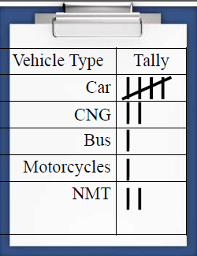
- Tallies are used.
- Typically used for periods of less than a day
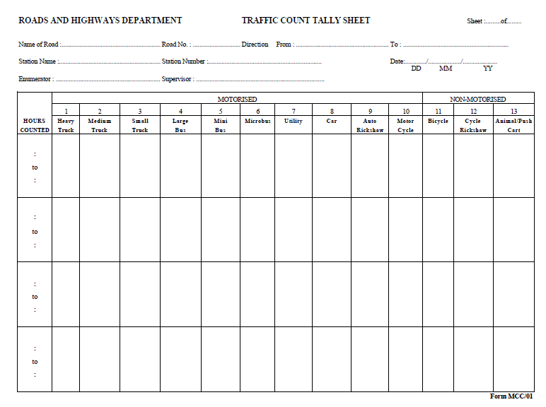
- Mechanical hand counters
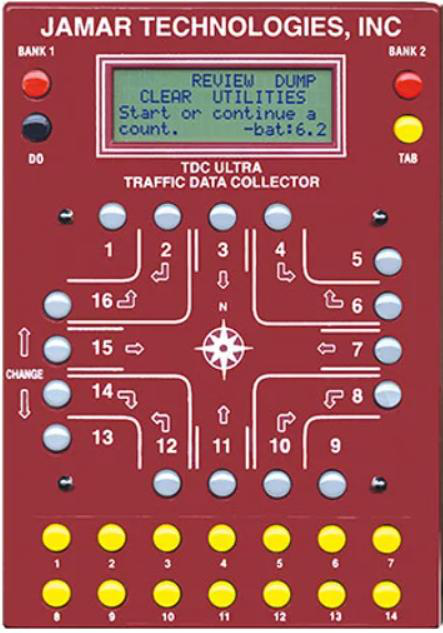
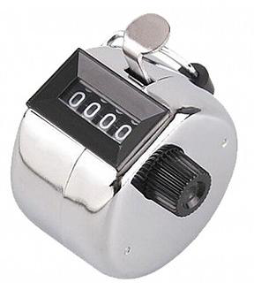
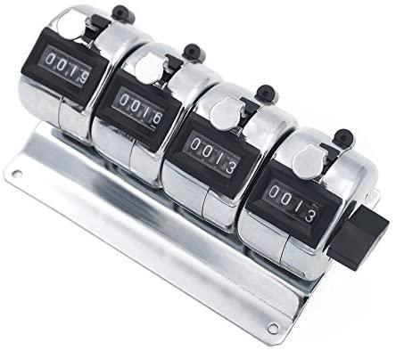
- Advantages:
- Classification, directional and turning movement count can be obtained
- Reliable
- Less office work
- Costly and sophisticated equipment are not necessary
- Disadvantages
- Subjected to human error
- Labor intensive
- Not suitable for long period of count
Automatic Method
- Automatically record the total number of vehicles crossing a section of the road in a desired period
- Contact-based system:
- Involves laying of detector such as pneumatic tube or piezoelectric strips or magnetic loop detector across a road which are connected to a box containing the means for storing the information
- Contact less system:
- Ultrasound/infrared radar, micro wave, CCTV/video image processing
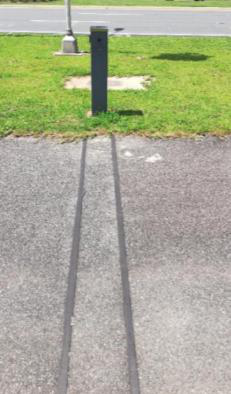
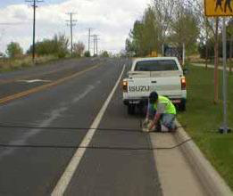
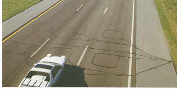
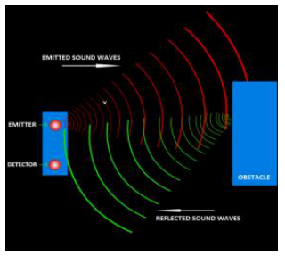
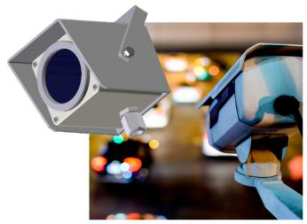
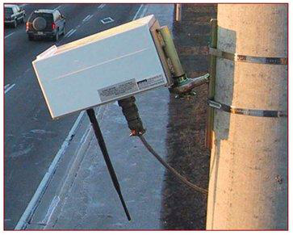
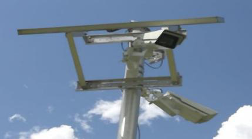
- Ultrasound
- Infrared
- Microwave Radar
- Video Camera
- TDC1 Traffic Detector
- Advantages:
- Suitable for gathering traffic data for longer period
- Surveyors are not required
- Disadvantages:
- Costly & sophisticated equipment are required
- Need to check accuracy of devices
Video Taping Method
- Video camera placed at suitable elevated position to record the vehicle movement
- Recorded video processed at office later
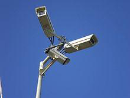
- Advantages:
- Less field Surveyors are required
- Records are permanent and can be reviewed any time later
- Opportunity to obtain wide range of data
- Disadvantages:
- Costly video equipment are required
- Additional office work is required
Photographic Method
- Photographs are taken at fixed intervals of time (e.g. 1 sec/ frame) on a special camera.

- Passage of vehicle is traced with reference to time.
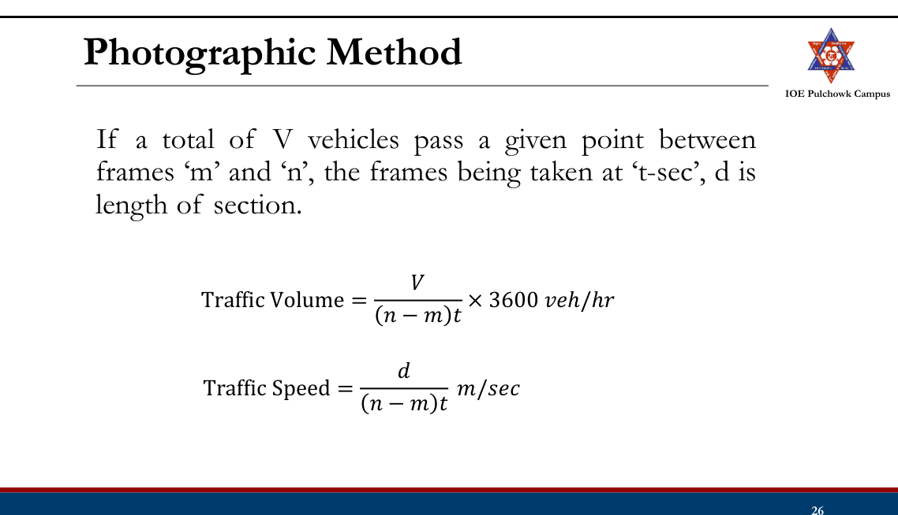
Moving Observer (Floating Car) Technique20822076
- A test vehicle is driven over a given section at the average speed of the stream
- A group of observers record the various details (Check in speed and delay study)
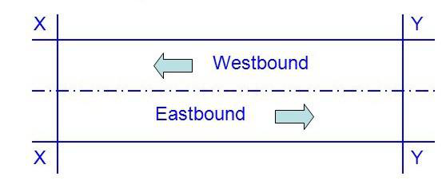
Traffic Volumes and Their Uses
- Daily volumes
- Hourly volumes
- Sub hourly volumes
- Cordon volume counts
- Intersection counts
Daily Volumes and Use
- Common time interval for volume is day
- Used for highway planning and general observations of trends
- Traffic volume projections
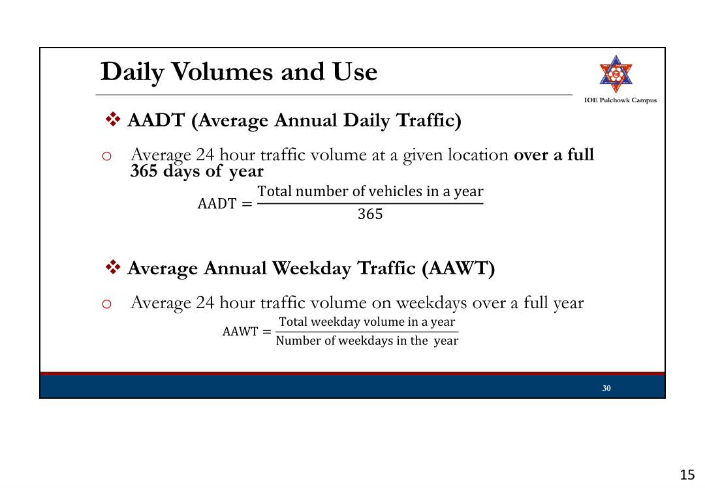
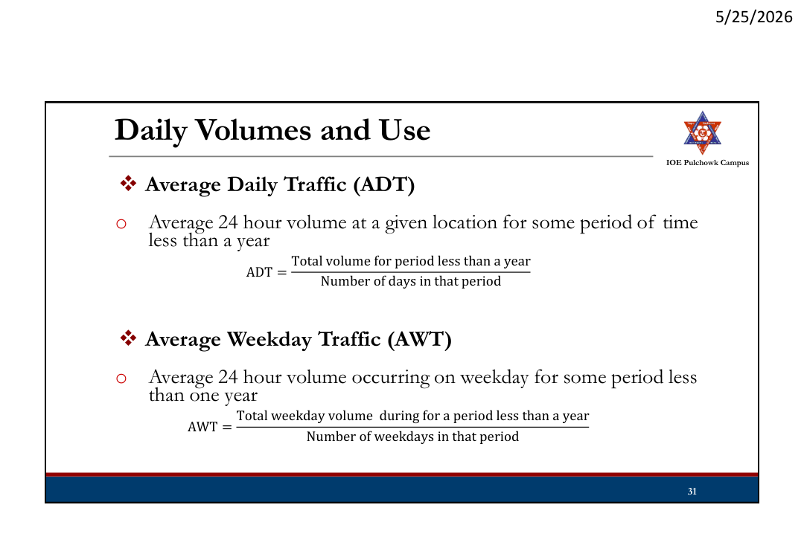
Traffic Volume
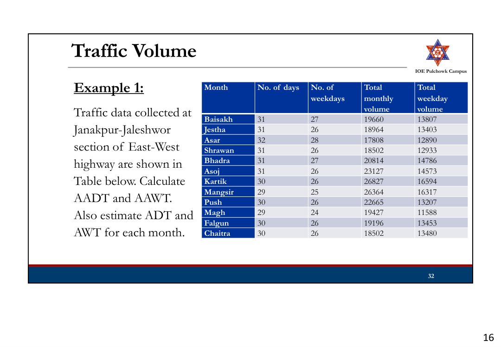
Hourly Volume and Use
- The single hour of the day that has the highest hourly volume is referred to as the peak hour and the corresponding hourly volume is peak hourly volume.
- Peak hour volume in peak direction of flow is of greatest interest to traffic engineers in design or operational analysis.
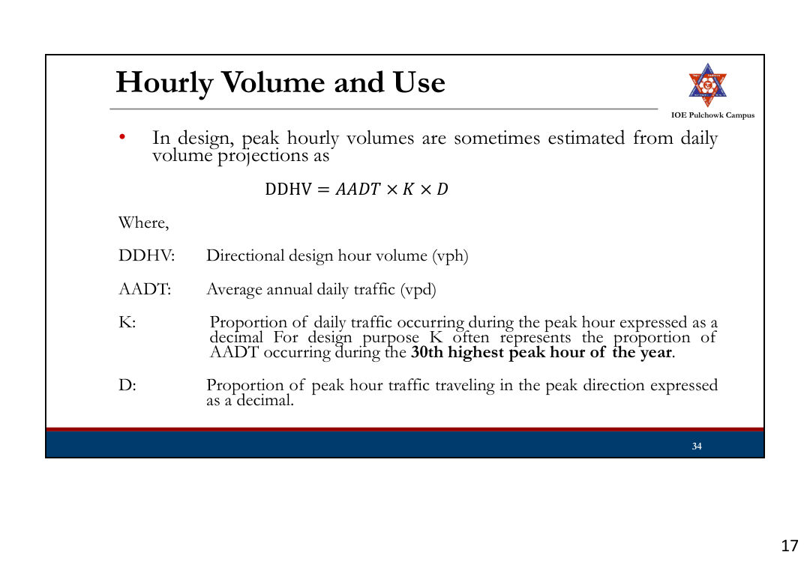
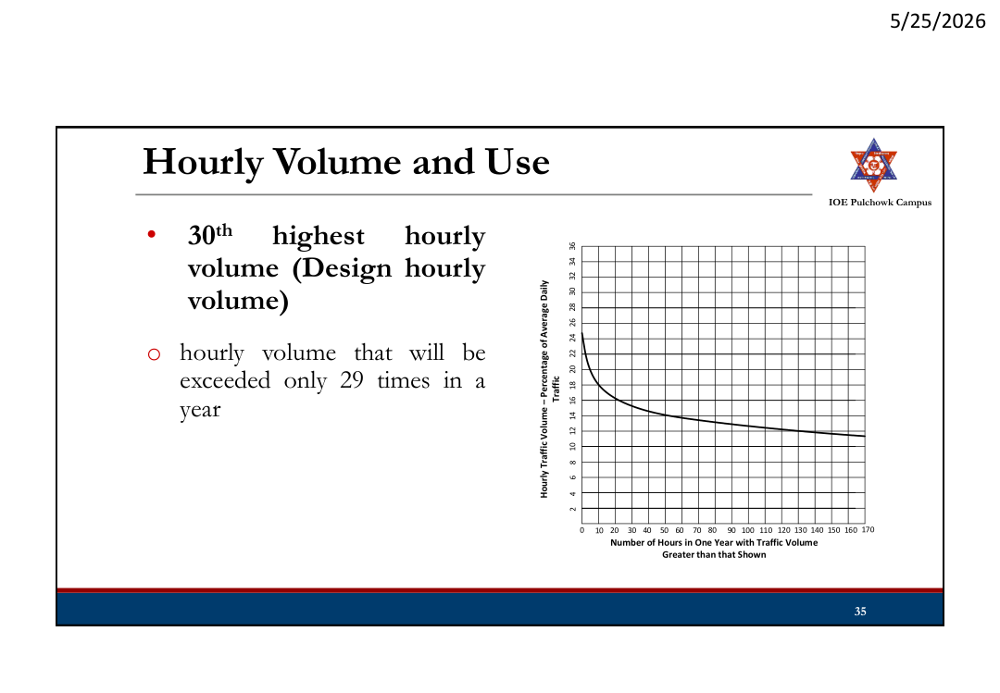
Sub-Hourly Volume and Use2080
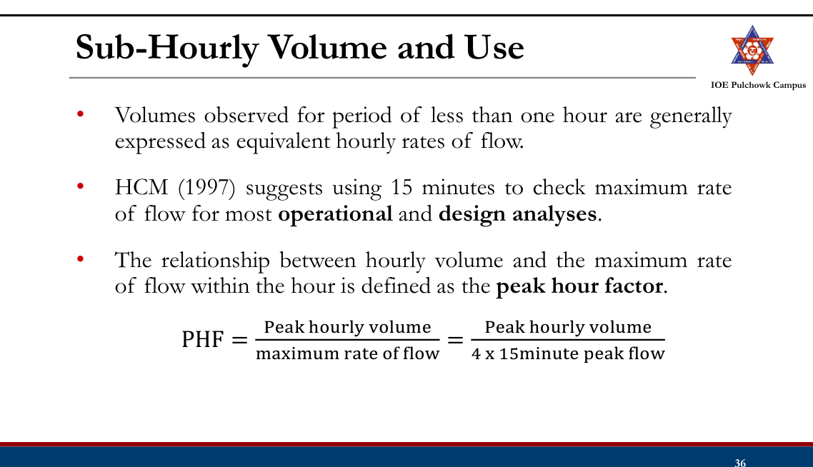
Traffic Volume
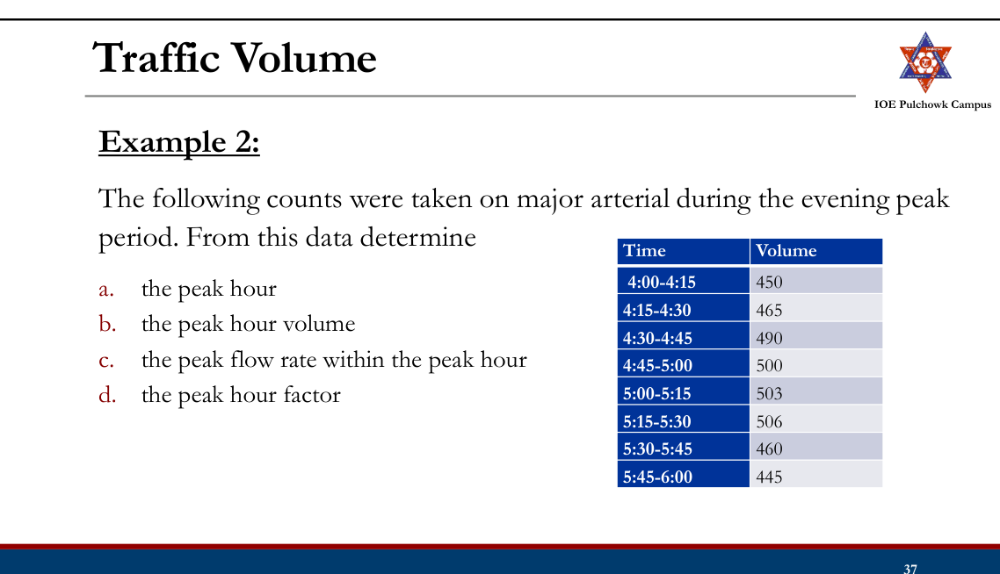
Cordon Volume Count and Intersection Count
- Cordon Volume Count:
- Accumulation of vehicles and/or persons within the cordon boundary (total of all counts entering and leaving the area by time period)
- Useful to estimate street capacity, parking needs etc. in similar land use type
- Intersection Count:
- At intersections, turning movements
- Useful for planning, signal timings, channelization and other control measures
Presentation of Traffic Volume Data
- Average Traffic Volumes
- Expressed in AADT or ADT, helps in deciding the relative importance of a route
- Normally expressed in PCUs.
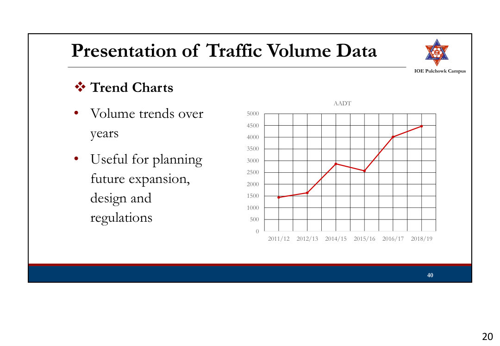
- Variation Charts
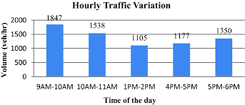
- Shows hourly, daily and seasonal variation
- Helpful for planning facilities and regulations needed during peak traffic period
- Traffic Flow Map
- Shows volume along various routes by using bands proportional to traffic volume carried
- Help to visualize the traffic volume distribution at a glance
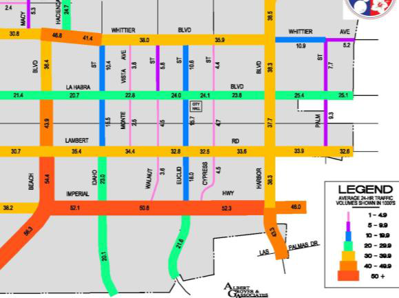
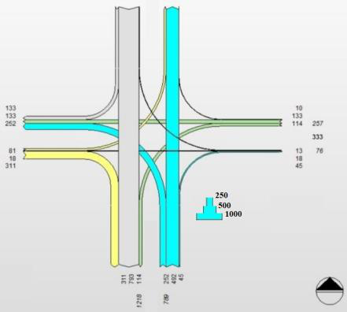
- Traffic Flow Diagram
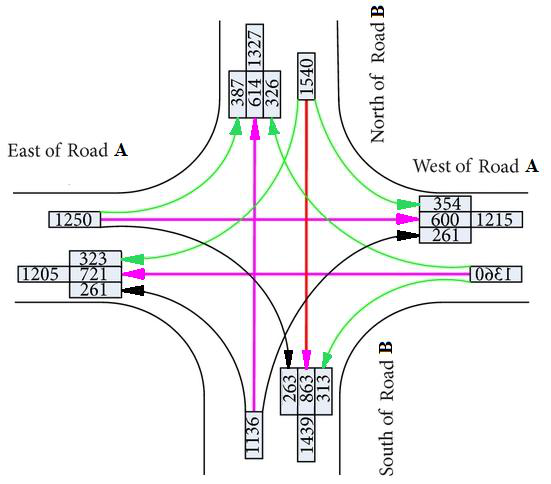
- Graphic representation of the traffic volume and directions of traffic movements through intersection
Poisson Distribution20812076
- Many traffic events such as vehicle arrival, crash occurrence are random processes
- The events occurs continuously and are measured in terms of an average rate of occurrence over an interval (time/space)
- The occurrence of events are independent
- Poisson (counting) distribution often used for modeling traffic phenomenon.
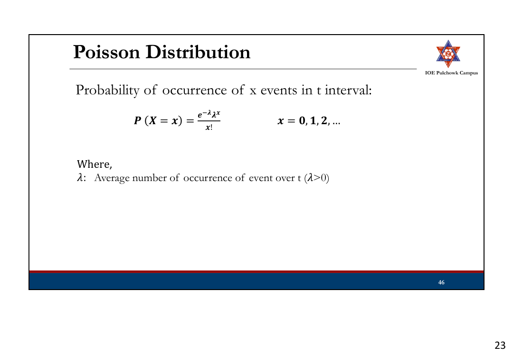
Numerical Example: The hourly flow rate in a road section is 120 veh/hr. Use Poisson distribution to model vehicle arrival at this road for 1 min time interval.
Tasks
➢Review need and type of traffic studies ➢Review volume studies: need, methods ➢Review various traffic volumes and uses ➢ Review ways to present traffic volume data ➢Review Poisson distribution
1.2 Traffic Speed and Delay Studies
Past Exam Questions on this Topic
- Define spot speed and explain the methods of conducting spot speed study. Write down the advantages and limitations of rotary intersection: [8] (2081 Bhadra, Q2)
Solution
Spot speed = instantaneous speed of a vehicle at a specified point on the road.
Methods of conducting a spot-speed study:
- Manual: stopwatch + short measured base length, or enoscope (mirror box).
- Automatic: pneumatic road tubes, inductive loop detectors, Doppler radar gun, LIDAR speed gun, and video / image-processing systems.
Advantages of a rotary intersection: continuous (stop-free) movement; all crossing manoeuvres converted to merging, weaving and diverging; self-regulating (no signal); eliminates severe right-angle and head-on conflicts; orderly and aesthetic.
Limitations: requires large land area; unsuitable for very high volumes or heavy pedestrian movement; causes delay under heavy flow; not suited to high-speed traffic or steep gradients; costly where land is expensive.
- In a field survey of spot speed, the following twenty observations were taken (in km/h): 50, 40, 60, 54, 45, 31, 72, 18, 43, 52, 46, 56, 43, 65, 33, 69, 34, 51, 47, 41. Find the time mean speed and space mean speed. Also, assuming these vehicle speeds are fixed over a half km segment, calculate the corresponding travel times and show that the space mean speed calculated using travel times is equal to the point estimate. (2075 Chaitra, Q2)
Solution
20 spot speeds (km/h): 50, 40, 60, 54, 45, 31, 72, 18, 43, 52, 46, 56, 43, 65, 33, 69, 34, 51, 47, 41. Σv = 950, Σ(1/v) = 0.4643.
- Time mean speed = Σv/n = 950/20 = 47.5 km/h
- Space mean speed = n/Σ(1/v) = 20/0.4643 = 43.1 km/h
Check with travel times over a 0.5 km segment: ti = 0.5/vi. Space mean speed = total distance / total time = (n×0.5)/Σti = (n×0.5)/(0.5×Σ(1/vi)) = n/Σ(1/vi) = 43.1 km/h, i.e. it equals the harmonic-mean (space-mean) point estimate. Note Vs < Vt always.
- Spot speed observations at a particular link are given in the table below. From the data, calculate the maximum speed limit, minimum speed limit, design speed and modal speed for regulation of traffic. (The frequencies of the lowest two speed classes were not legible in the scanned paper.) (2074 Ashwin, Q2)
Spot-speed frequency distribution Speed range (km/h) Frequency 6–10 – 10–14 – 14–18 7 18–22 20 22–26 44 26–30 80 30–34 82 34–38 79 38–42 49 42–46 36 46–50 26 50–54 9 54–58 10 58–62 3 Solution
Cumulating the legible classes (N = 445; the two lowest classes 6–10 and 10–14 were illegible but carry negligible weight for the required percentiles):
Cumulative speed distribution Upper bound (km/h) Cum. freq. Cum. % 18 7 1.6 22 27 6.1 26 71 16.0 30 151 33.9 34 233 52.4 38 312 70.1 42 361 81.1 46 397 89.2 50 423 95.1 54 432 97.1 58 442 99.3 62 445 100 Reading percentiles off this cumulative curve by linear interpolation:
- Minimum speed limit = 15th percentile = 22 + (15 − 6.1)/(16.0 − 6.1)×4 = ≈ 25.6 km/h
- Median (50th) = 30 + (50 − 33.9)/(52.4 − 33.9)×4 = 33.5 km/h
- Maximum / safe speed limit = 85th percentile = 42 + (85 − 81.1)/(89.2 − 81.1)×4 = ≈ 43.9 km/h
- Design speed = 98th percentile = 54 + (98 − 97.1)/(99.3 − 97.1)×4 = ≈ 55.6 km/h
- Modal speed = peak class 30–34 (f = 82): 30 + (82 − 80)/((82 − 80)+(82 − 79))×4 = ≈ 31.6 km/h
Method per Marsani (speed studies): plot cumulative % vs upper class-boundary and read the 15th, 50th, 85th and 98th percentiles; modal speed is the peak of the frequency histogram.
- Assuming a linear speed-density relationship, the mean free speed near zero density is 80 km/h and the corresponding jam density is 130 veh/km. Assume the average length of vehicles is 6 m. i) Write down the speed-density and flow-density equations. ii) Compute the speed and density corresponding to a flow of 1000 veh/hr. iii) Compute the average headways, spacing, clearance and gaps when the flow is maximum. Second part: The following data were collected for a section of road 2.5 km long during a floating-car method study. Assuming equivalency factors of 1, 2 and 3 for car, bus and truck respectively, calculate the directional flow, the journey speed and the running speed of the traffic stream. (The complete floating-car data table - journey time, stopped delay, number of vehicles met from the opposite direction, and overtaking/overtaken counts for each N-S and S-N run - is given in the scanned exam paper on the Past Questions page.) (2072 Chaitra, Q3)
Solution
Linear (Greenshields) part: vf = 80 km/h, kj = 130 veh/km.
v = 80(1 − k/130) = 80 − 0.615k ; q = kv = 80k − 0.615k².
qmax = vfkj/4 = 80×130/4 = 2600 veh/h at k0 = 65 veh/km, v0 = 40 km/h.
At q = 1000 veh/h: 0.615k² − 80k + 1000 = 0 → k = 14.0 or 116.0 veh/km, v = q/k = 71.4 km/h (free) or 8.6 km/h (congested).
At maximum flow: spacing = 1000/k0 = 1000/65 = 15.4 m; headway = 3600/qmax = 3600/2600 = 1.38 s; clearance = spacing − vehicle length = 15.4 − 6 = 9.4 m; gap = clearance / v0 = 9.4/(40/3.6) = 0.85 s.
Floating-car part: for each direction q = (na + nw)/(ta + tw), journey time t̄ = tw − nw/q, running time = journey time − stopped delay, using PCU factors 1, 2, 3 for car, bus, truck.
Free speed vf = 80 km/h is taken from the sibling exam papers (the value did not OCR). The floating-car data table is on the scanned Past Questions page; substitute those values into the relations above.
- Average trip time for office is 30 minutes with a standard deviation of 5 min. Assuming a normal distribution of trip time, calculate the following: a) Probability of trip time being at least 35 minutes. b) If the working hour starts at 10:00 AM and the trip starts at 9:40 AM, what is the probability of being late? (2071 Chaitra, Q3)
Solution
Trip time is normally distributed, μ = 30 min, σ = 5 min.
(a) P(T ≥ 35): z = (35 − 30)/5 = 1.0 → P = 1 − Φ(1.0) = 1 − 0.8413 = 0.159 (15.9%).
(b) Probability of being late: available time = 10:00 − 9:40 = 20 min. Late if T > 20 min. z = (20 − 30)/5 = −2.0 → P(T > 20) = P(z > −2) = Φ(2) = 0.977 (97.7%).
Review
- Traffic studies
- Traffic volume studies Need, counting periods, methods
- Traffic volumes and uses
- Presentation of traffic volume data
- Poisson distribution
Speed Studies
- Speed is the rate of traffic movement
- Speed study is determination of the rate of traffic movement under specific conditions and for specific purpose
Types of Speed
- Spot Speed
- Average Speed (Time Mean Speed and Space Mean Speed)
- Running Speed
- Journey (Travel) Speed
Spot Speed
- Instantaneous speed of vehicle at a specified location
- Uses:
- To determine speed trend
- Traffic capacity studies
- Traffic operation and control
- Geometric design of road
- Crash studies
- Before and after studies
- Research studies
Average Speed
- Average of spot speed of all vehicles passing a given point on the highway
- It can be:
- Space Mean Speed
- Time Mean Speed
Time Mean Speed (TMS)
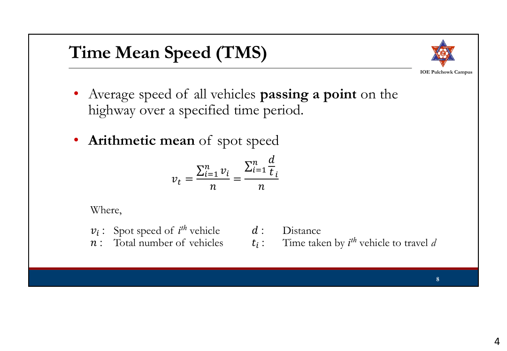
Space Mean Speed (SMS)20752066
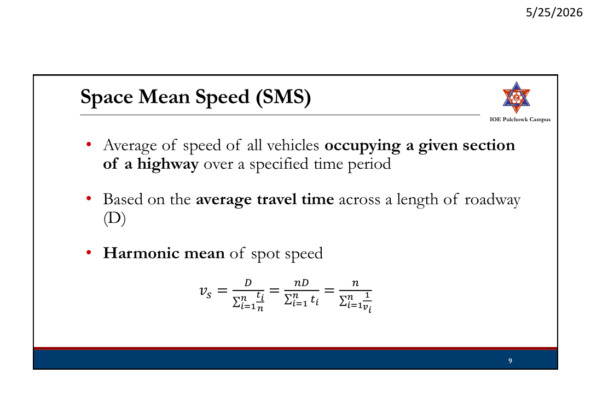
Relationship Between SMS &TMS
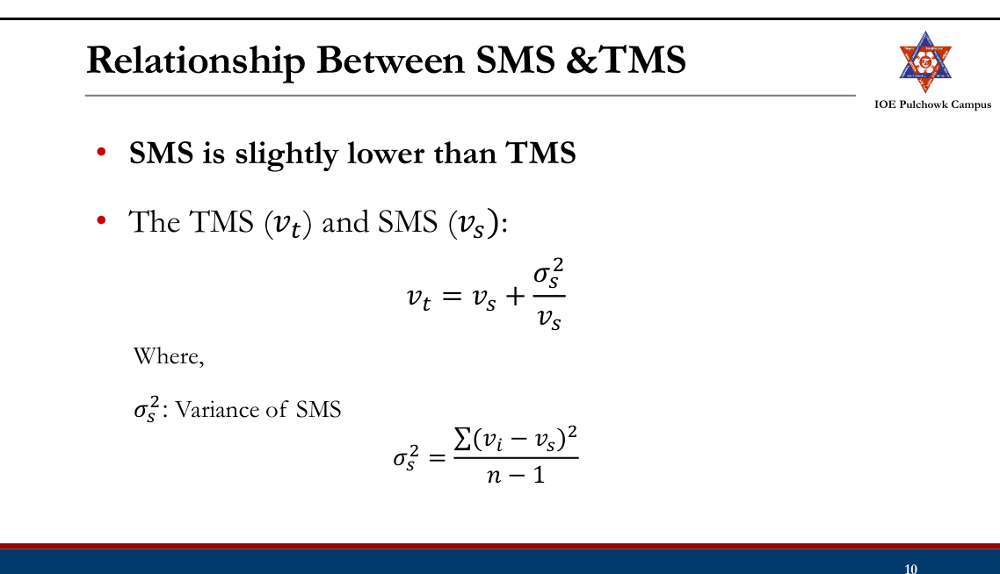
SMS & TMS
Numerical Example: Travel time (in second) measured for vehicles traversing 300m segment of a feeder road are 20.6, 21.7, 19.8, 20.3, 22.5, 18.5, 19.0, and 21.4. Determine the time mean speed and space mean speed of these vehicles.
Running Speed
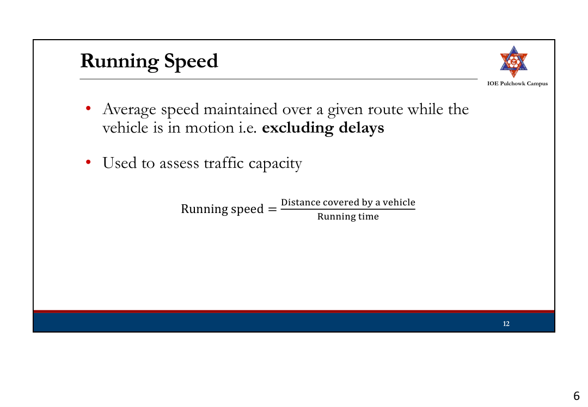
Journey (Travel) Speed
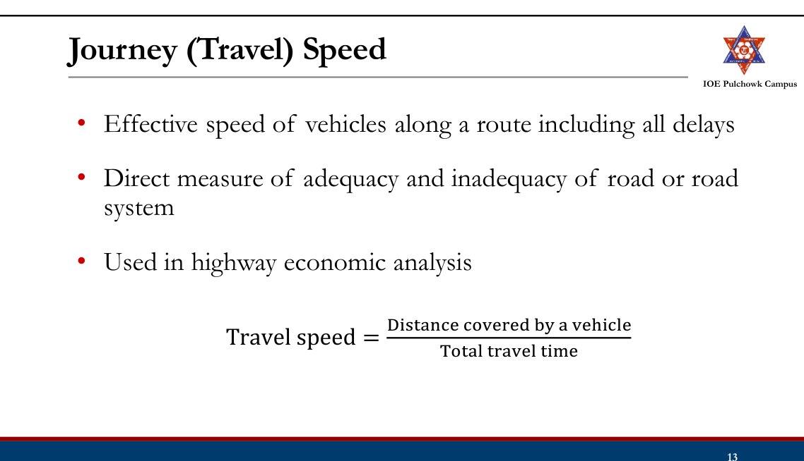
Methods of Spot Speed Measurement2081
- Manual
- Stop Watch (Direct) Method
- Enoscope Method
- Automatic
- Road Detectors (Pneumatic tube, Induction Loop)
- Radar meters
- Others
- Photographic, Videographic
Location
- If possible straight, level and open sections of highways should be selected
- Recommended base lengths:
- Speed <40kmph: 27m
- Speed 40 to 65kmph: 54m
- Speed >65kmph: 81m
Sample Selection
- Random
- Representative (type, composition etc.)
- Free-flowing vehicles only
- At least 100 vehicles for 1 hour
Stop Watch (Direct) Method
- Two reference points are marked on the pavement at a suitable distance apart.
- Single or two observers can be used to measure time
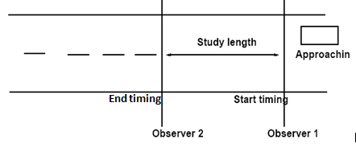
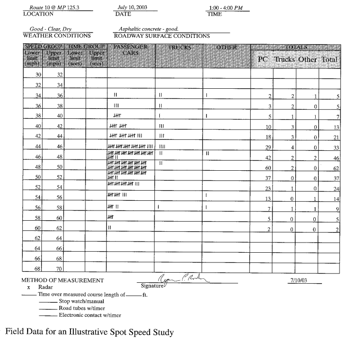
- Advantage:
- Simple, easy and inexpensive
- Disadvantage:
- Human errors
- Parallax errors
Enoscope Method
- L-shaped box, open at both ends ,with a mirror set at 45 ˚ to the arms of the instrument.
- Measurement with two or one Enoscopes:
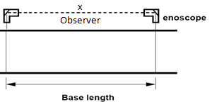
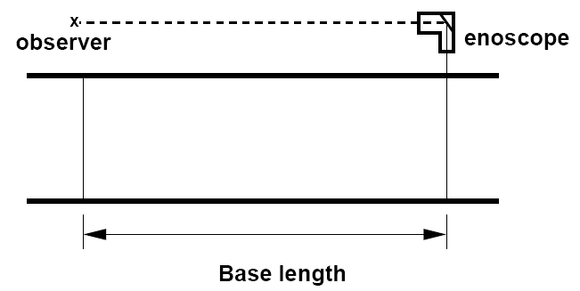
- Advantage:
- Simple
- Eliminates parallax error.
- Equipment is of low cost and can set up easily
- Disadvantage:
- Human errors
- Not suitable for heavy multilane traffic
Pneumatic Tube Detector
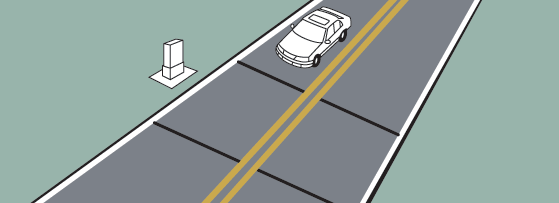
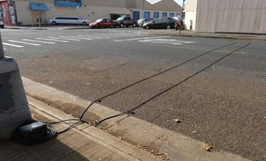
- Pneumatic tubes laid across the carriageway at the two reference point.
- When a vehicle passes over them, air impulses are sent to an electromagnetically controlled device.
- Time elapsed between first impulse and second impulse is recorded as speed.
- Advantage:
- Human errors are eliminated
- Accurate
- Disadvantage:
- May affect driver behavior,
- May disrupt traffic
Inductive Loop Detector
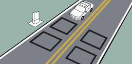
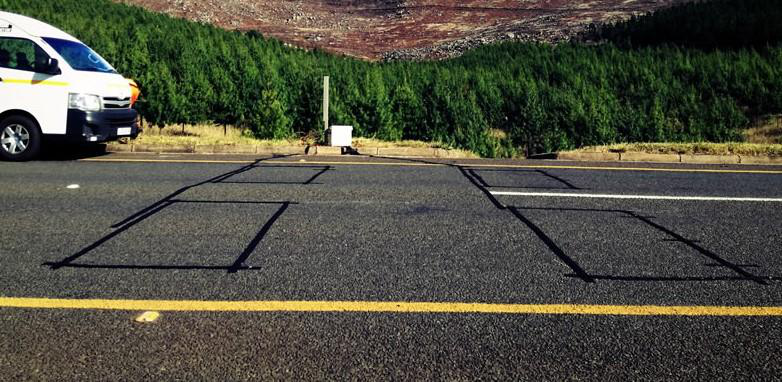
- A rectangular wire loop buried under the roadway surface, supplied with electromagnetic field
- A disturbance in the electrical field is created when a motor vehicle passes across it.
- Time difference between two loop is noted as speed.
Radar Meter
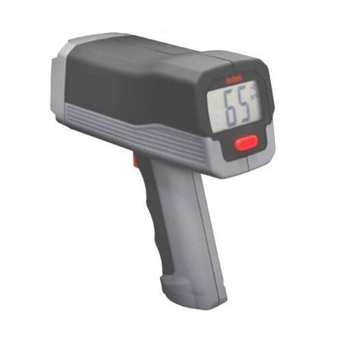
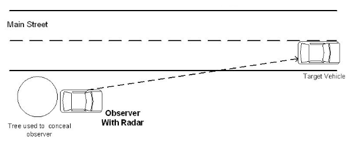
- Speed is proportional to change in frequency between the Radio wave transmitted and the radio wave received back.
- Instrument is setup near the edge of road at a height of 1m and target the vehicle, which gives speed directly.
- Hand held radar units (radar guns) are also used.
- Conceal the operation
- Cosine correction: Minimize cosine error by keeping angle <7o on freeways, <9o on urban streets
Photographic Method
- Photographs are taken at fixed intervals of time (e.g. 1 sec/ frame) on a special camera.
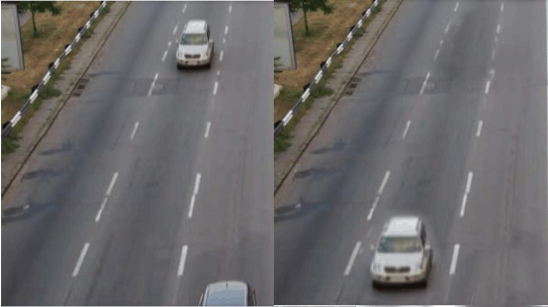
- Passage of vehicle is traced with reference to time.
Video graphic Method
- Video camera placed at suitable elevated position to record the vehicle movement
- Recorded video processed at office later to obtain speed
- Useful to determine speed of vehicles in crowded streets
Presentation and Analysis of Spot Speed Data
- Tabular Presentation
- Statistical Analysis
- Graphical Presentation
Tabular Presentation
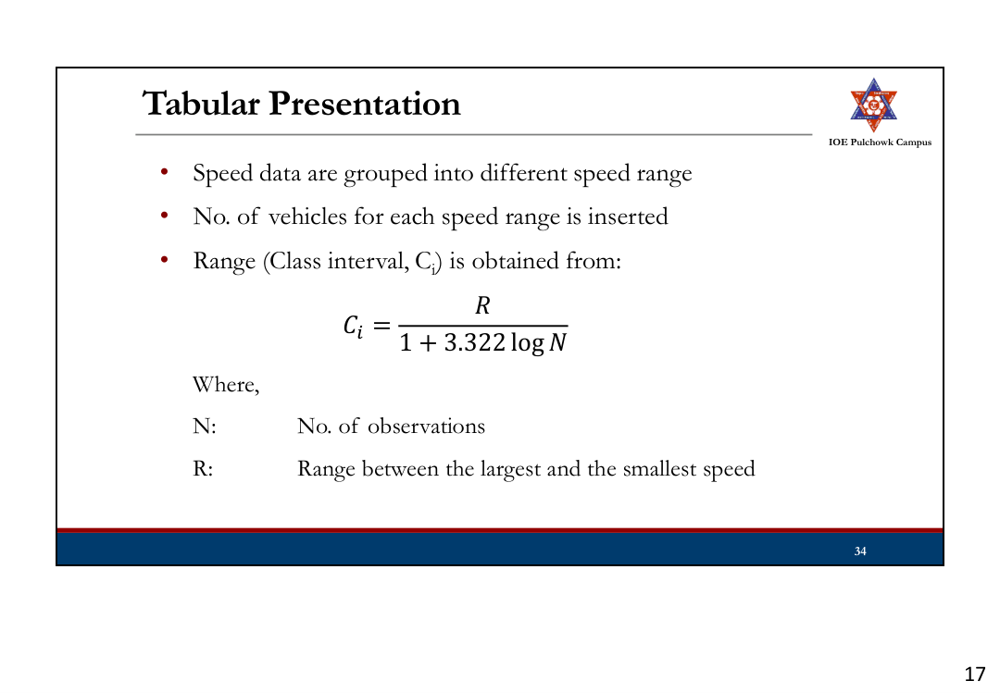
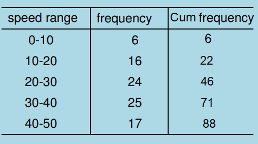
Statistical Analysis
- Measures of central tendency
- Mean, Median, Mode
- Measures of dispersion
- Standard Deviation, Standard Error
- Estimating sample sizes
Central Tendency
Dispersion
Sample Size
Graphical Presentation
- Frequency histogram
- Frequency curve
- Cumulative frequency curve
Histogram
- Graphical representation with x- axis as spot speed and y-axis as frequency
Frequency Curve
- Bell shaped curve obtained by a line joining mid points of histogram
- Useful to check normality of data
- Modal speed: Drop a vertical line from the peak of the frequency curve
- Pace: 10Km/h increment in speed in which the highest % of drivers is observed
Cumulative Frequency Curve2074
- Curve obtained by plotting the cumulative % against the upper limit of speed range
- Smooth S-curve is obtained
- Use:
- 98% - Design speed
- 85% - Upper speed limit
- 50% - Median Speed
- 15% - Lower speed limit
Spot Speed
Numerical Example The data collected in kmph on 86 vehicles in a rural road during spot speed study is shown in table below. Develop the frequency histogram, frequency distribution, and cumulative frequency of data and determine: i) Mean speed and space mean speed ii) Standard deviation iii) Median speed iv) Modal speed v) Pace vi) Speed limit for regulation vii) Speed to check geometric design viii) Lower speed limit
Normal Distribution to Spot Speed2071
Numerical Example: A spot speed at particular location are normally distributed with a mean of 51.7 kmph, standard deviation of 8.3kmph. What is the probability that the speed exceeds a) 65kmph. b) Speed lies between 40-70kmph. c) What is the 85th percentile speed?
Delay
- Time lost during the travel due to disruption of traffic movement
- Measured as the time difference between actual travel time and free-flow travel time
- Types:
- Fixed: At intersections due to traffic signals
- Operational: By interference of traffic movements e.g. turning movements and internal friction in the traffic stream e.g. high volume
Speed and Delay Study
- Determine running speeds, overall speeds, fluctuations in speeds and delay between two stations of a road spaced far apart
- Uses:
- To detect spots of congestion and causes
- To find travel times in specific links
- To determine level of service
- For benefit cost analysis
- For before after studies
Methods of Speed and Delay Study
- License Plate Observations
- Observation from Vantage Point
- Photographic and Video Survey Method
- Interview Method
- Moving Observer (Floating Car) Technique
License Plate Observations
- Observers at entrance and exit record license plate number and time of vehicles
- The license plate number recordings are matched and the difference in time is the travel time of the vehicle
- Average of travel times of vehicles (at least 50 matched sample) is the average traveling time on the test section
Observation from Vantage Point
- Average travel time, number of delays, duration and causes are recorded through observations of vehicles from an elevated point
- Suitable only for short section
Photographic and Video Survey Method
- Same as in Volume and Speed study
- Useful for short stretch of section
Interview Method
- Road users of the study site are interviewed regarding their travel times, experience of delays.
- Used when large amount of information is needed in short time
- Requires cooperation of the people
Moving Observer (Floating Car) Technique2072
- A test vehicle makes a series of runs on a road section on both directions at approximately the average speed of the stream.
- Minimum 6 runs on each direction
- A group of observers make record of various details:
- Journey Observer: Start and end time of journey; time, location and cause of delays
- Opposing Counter: No. of vehicles travelling in the opposite direction in each trip
- Tally Counter: No. of vehicles overtaking the test vehicle and no. of vehicles overtaken by the test vehicle in each trip
Numerical Example: The consolidated data collected from speed and delay studies by floating car method on a stretch of urban road of length 3.5 km running North-South are given below. Determine the average values of volume, journey speed and running speed of the traffic stream along either direction. Trip no. Direction of trip Journey time Total stopped delay No. of vehicles Overtaking Overtaken From opposite direction N-S S-N N-S S-N N-S S-N N-S S-N min sec min sec
Tasks
➢Review spot speed, average speed (TMS & SMS), journey speed, running speed ➢Review methods of speed measurement (stop watch, enoscope, pneumatic tube, inductive loop, radar meter, photographic and video graphic method ➢Review tabular and graphical presentation and statistical analysis of spot speed data ➢Review normal distribution to spot speed ➢Review speed and delay study and its uses ➢Review methods of speed and delay study ➢ Review moving observers or floating car technique for speed and delay study
1.3 Origin and Destination Study
Past Exam Questions on this Topic
- What are the uses of origin and destination study? Briefly explain the methods of conducting this study (2071 Chaitra, Q2)
Solution
Uses of Origin-Destination (O-D) study: planning road networks, bypasses and new links; locating terminals, parking areas and expressways; planning mass-transit routes; establishing desire lines and travel-demand (trip) patterns; phasing road improvements; and land-use / zoning decisions.
Methods of conducting an O-D study:
- Road-side interview method
- License-plate (registration-number) method
- Return post-card method
- Tag-on-vehicle method
- Home-interview method
Review
- Spot speed, TMS, SMS, running speed, travel/journey speed
- Methods of spot speed measurement
- Presentation and analysis of spot speed data
- Normal distribution for spot speed analysis
- Speed and delay study and its uses
- Methods of speed and delay study
- Moving observers or floating car technique
Origin and Destination (O-D) Study
- Origin: Place where the trip begins
- Destination: Place where the trip ends
- O-D study reveals:
- Actual/desired direction of travel, routes and length of trip
- Amount of travel between various locations or within particular location
- Relationship between amount and type of travel and the traffic generating factors
Uses of O-D Study2071
- To judge the adequacy of existing routes and plan transportation system (new network of roads, mass transit facilities including plans for operation)
- To locate major routes along the desire lines
- To establish by pass route
- To locate terminals and plan terminal facilities
- To locate new bridges as per traffic demands
- To establish design standards
O-D Data
- Area under O-D survey is divided into various zones uniform in characteristics and bounded by natural or artificial boundaries like river, lakes, rail, roads etc. z1 z2 z3
- Information collected:
- Number of vehicular trips, their O-D origin and destination in each zone under study (O-D matrix)
- Additional information collected:
- Land use patterns, household characteristics
- Trip details: Purpose of trip, time and mode of trip, number of passengers in each vehicle, intermediate stops and reasons etc.
Methods of O-D Survey
- Road Side Interview Method
- Home-Interview Method
- Work Spot Interview Method
- License Plate Method
- Post card Method
- Tag on Vehicle Method
- Commercial Vehicle Survey
Road Side Interview Method
- The vehicles are stopped at the interview stations by a group of surveyor
- Drivers are questioned using prescribed questionnaire about
- Origin and Destination
- Trip time, purpose, frequency
- Sampling:
- Simply next vehicle after interviewing one;
- A fixed number of vehicles (eg. 3 out of 12 vehicles);
- % by time (e.g. all vehicles in every half hour)
Home Interview Method
- A representative sample (about 10% of population) is selected
- Detailed information on household characteristics and travel information are collected through interviews and questionnaire forms.
- Suitable to obtain comprehensive details
- Useful for planning road network and particularly mass transportation facilities
- Information collected:
- Household information: Household size, income, vehicle ownership, driving license etc.
- Household travel data: O-D of all trips, start and finish times of journeys, journey purpose, mode of travel, number of occupants, public transport route and cost, details of parking utilized etc.
Work Spot Interview Method
- Work spot like office, factories, institutions can be chosen for survey
- Origin-destination, parking requirement and other information are collected
License Plate Method
- A number of survey points are fixed.
- Registration number and class of each vehicle entering or leaving an area at survey points located on the cordon line are noted.
- Information obtained from all the survey points are tallied and origin destination data are obtained.
- Data collection does not interrupt traffic.
- Large number of stations and large number of study personnel are required.
Post Card Method
- A questionnaire with required information is printed on post card.
- Pre-paid post cards are handed over to each of the drivers at the survey points
- The road users are requested to answer the questions and return by post.
- Simple and little interference to traffic
- Return rate is less (30% is typical)
Tag on Vehicle Method
- A tag or sticker of particular shape and color is stuck on the windscreen of each vehicle entering the survey area.
- The place of entry and time is marked.
- The tag is taken back as it leaves the survey area and the time and station are recorded.
Commercial Vehicle Survey
- Operators are contacted to obtain information on journeys made by commercial vehicles.
- Questionnaire are issued to drivers with a request to record their trips.
Presentation of O-D Data
- OD Table (Matrix)
- Desire Lines
O-D Table
- Horizontal axis of the matrix represents the Destination zone
- Vertical axis represents the origin zone
- The number of trips are entered in the cells of matrix Destination zone T11 T12 T13 T21 T22 T23 T31 T32 T33 Origin zone
Desire Lines
- They are straight lines connecting the centroids of the two zones
- Width of line is drawn to a suitable scale to represent the nos. in both direction z1 z2 z3 JICA (2024) Kathmandu Valley Urban Transport System Master Plan
Presentation of O-D Data
JICA (2024) Kathmandu Valley Urban Transport System Master Plan:
- Household Interview Survey of 21372 households, around 2.5% of population of 18 municipalities in KV
- 222 zones (each ward in the municipalities) JICA (2024) Kathmandu Valley Urban Transport System Master Plan
JICA (2024) Kathmandu Valley Urban Transport System Master Plan
Shopping increased from 4 to 7.6%, Leisure/recreation increased from 1.8 to 5.5%.
JICA (2024) Kathmandu Valley Urban Transport System Master Plan
Tasks
➢Review OD survey and its uses ➢Review methods of OD survey ➢Review presentation of OD survey data
1.4 Basic Traffic Flow Parameters
Past Exam Questions on this Topic
- Assuming a linear speed-density relationship, the mean free speed is observed to be 80 kmph near zero density and the corresponding jam density is 120 veh/km. [8] a) Write down the speed-density and flow-density equations. b) Draw the v-k, v-q and q-v diagrams indicating the critical values. c) Compute the speed and density corresponding to a flow of 800 veh/hr. d) Compute the average headways and spacing when the flow is maximum. (2081 Bhadra, Q3)
Solution
Linear (Greenshields) model: free speed vf = 80 km/h, jam density kj = 120 veh/km.
(a) Equations: speed-density v = vf(1 − k/kj) = 80 − 0.667k ; flow-density q = k·v = 80k − 0.667k².
(b) Diagrams: v-k is a straight line (80 → 0); q-k and v-q are parabolas. Critical values at qmax: k0 = kj/2 = 60 veh/km, v0 = vf/2 = 40 km/h, qmax = vfkj/4 = 2400 veh/h.
(c) At q = 800 veh/h: 0.667k² − 80k + 800 = 0 → k = 11.0 or 109.0 veh/km, with v = q/k = 72.7 km/h (free-flow) or 7.3 km/h (congested).
(d) At maximum flow: spacing = 1000/k0 = 1000/60 = 16.7 m; headway = 3600/qmax = 3600/2400 = 1.5 s.
- Assuming a linear speed-density relationship of V = 60 - 0.43K: a) Draw the V-K, V-Q and Q-K diagrams showing the critical values. b) Find the saturation flow. c) Find the speed and density at a flow of 1000 veh/hr. (2074 Ashwin, Q4)
Solution
Given linear model v = 60 − 0.43k → vf = 60 km/h; at v = 0, kj = 60/0.43 = 139.5 veh/km.
(a) Diagrams: v-k straight line; v-q and q-k parabolas (mark vf, kj, and the peak).
(b) Saturation (maximum) flow: qmax = vfkj/4 = 60×139.5/4 = ≈ 2093 veh/h (at k0 = 69.8 veh/km, v0 = 30 km/h).
(c) At q = 1000 veh/h: 0.43k² − 60k + 1000 = 0 → k = 19.4 or 120.2 veh/km, v = q/k = 51.7 km/h (free) or 8.3 km/h (congested).
- Assuming a linear speed-density relationship, the mean free speed near zero density is 80 km/h and the corresponding jam density is 130 veh/km. Assume the average length of vehicles is 6 m. i) Write down the speed-density and flow-density equations. ii) Compute the speed and density corresponding to a flow of 1000 veh/hr. iii) Compute the average headways, spacing, clearance and gaps when the flow is maximum. Second part: The following data were collected for a section of road 2.5 km long during a floating-car method study. Assuming equivalency factors of 1, 2 and 3 for car, bus and truck respectively, calculate the directional flow, the journey speed and the running speed of the traffic stream. (The complete floating-car data table - journey time, stopped delay, number of vehicles met from the opposite direction, and overtaking/overtaken counts for each N-S and S-N run - is given in the scanned exam paper on the Past Questions page.) (2072 Chaitra, Q3)
Solution
Linear (Greenshields) part: vf = 80 km/h, kj = 130 veh/km.
v = 80(1 − k/130) = 80 − 0.615k ; q = kv = 80k − 0.615k².
qmax = vfkj/4 = 80×130/4 = 2600 veh/h at k0 = 65 veh/km, v0 = 40 km/h.
At q = 1000 veh/h: 0.615k² − 80k + 1000 = 0 → k = 14.0 or 116.0 veh/km, v = q/k = 71.4 km/h (free) or 8.6 km/h (congested).
At maximum flow: spacing = 1000/k0 = 1000/65 = 15.4 m; headway = 3600/qmax = 3600/2600 = 1.38 s; clearance = spacing − vehicle length = 15.4 − 6 = 9.4 m; gap = clearance / v0 = 9.4/(40/3.6) = 0.85 s.
Floating-car part: for each direction q = (na + nw)/(ta + tw), journey time t̄ = tw − nw/q, running time = journey time − stopped delay, using PCU factors 1, 2, 3 for car, bus, truck.
Free speed vf = 80 km/h is taken from the sibling exam papers (the value did not OCR). The floating-car data table is on the scanned Past Questions page; substitute those values into the relations above.
Review
- OD survey and uses
- Methods of OD survey
- Presentation of OD data
Basic Traffic Flow Parameters
- Traffic flow refers to the movement of vehicles through space and time.
- Traffic flow characteristics are affected by vehicle types, road users, and roadway and traffic conditions.
- Essential for the analysis, design, and operational management of traffic streams.
- Flow (q): Number of vehicles/volume passing a fixed roadside point per unit time (vph)
- Speed (v): Space mean speed of vehicles (kmph)
- Density (k): Number of vehicles located in a given length of lane or roadway at a particular instant in time (vpkm). The relation between speed, density, and flow is: q = kV (Fundamental relationship in traffic flow theory)
Other Traffic Flow Parameters
- Spacing/Space Headway (s):
- Distance between successive vehicles in a traffic stream as measured from front bumper to front bumper.
- Clearance and Gap:
- Correspond to spacing (m) and headway (sec) respectively — clearance is the spacing minus the vehicle length, and gap is the headway minus the vehicle's occupancy time.
Time Space Diagram
Basic Traffic Flow Parameters
- Flow
- Density
- Speed
- Space headway
- Time headway
Traffic Flow Conditions
- Uninterrupted:
- It occurs at the facilities where there are no external factors such as traffic signal that cause periodic interruption to the traffic stream.
- Eg. Freeways, limited-access facilities, where there are no traffic signal, stop or yield signs, or surface intersections. It may also exist in long sections of rural highway between signalized intersections.
- Flow breakdown is due to internal factor only.
- Interrupted:
- It occurs at the facilities that have external devices that periodically interrupt traffic flow
- The principal device creating interrupted flow are the traffic signal, stop sign etc.
- Flow occurs in platoons.
Analysis of Speed, Flow and Density Relationship20812074
Uninterrupted traffic flow:
- Points A, B, to C: Normal Flow
- Points C to D: Forced flow
Speed Density Relationship20812072
Flow Density Relationship
Speed Flow Relationship
Basic Traffic Flow Parameters
Example: A study of freeway flow at a particular site has resulted in a calibrated speed density relationship as follows: V = 57.5(1 − 0.008K). For this relationship, determine, (a) free flow speed (b) jam density (c) capacity and d) plot speed flow relationship and e) flow density relationship. What will be the speed and density value for highest level of service possible if the flow is 80% of the capacity flow? Calculate spacing, headway, gap and clearance when there is capacity flow if the length of vehicle is 6.1m.
1.5 Traffic Capacity and Level of Service
Past Exam Questions on this Topic
- Define the capacity of a road and list out its types. Two vehicles A and B approaching at right angles, A from west and B from south, collide with each other. After the collision, vehicle A skids in a direction 45° north of west and vehicle B 50° east of north. The initial skid distances of vehicles A and B are 35 m and 25 m respectively before collision. The skid distances after collision are 30 m and 10 m respectively. If the weights of vehicles A and B are 3.5 and 6 tonnes respectively, calculate the original speeds of the vehicles. The average skid resistance of the pavement is found to be 0.55. [2+6] (2080 Bhadra, Q2)
Solution
Capacity of a road = the maximum hourly rate at which vehicles can reasonably be expected to traverse a point or uniform section of a lane/roadway under prevailing traffic and roadway conditions. Types: basic (theoretical) capacity, possible capacity, and practical (design) capacity.
Accident reconstruction. g = 9.81 m/s², f = 0.55.
Step 1 - speeds just after collision (from post-collision skid, v = √(2 g f d)):
- Vehicle A (d = 30 m): vA' = √(2×9.81×0.55×30) = 17.99 m/s
- Vehicle B (d = 10 m): vB' = √(2×9.81×0.55×10) = 10.39 m/s
Step 2 - momentum conservation at impact (A initially W→E along +x, B initially S→N along +y; after collision A deflects 45° toward N, B 50° E of N). Taking the consistent forward interpretation:
x: mAuA = mAvA'cos45° + mBvB'sin50° ; y: mBuB = mAvA'sin45° + mBvB'cos50°
With mA = 3.5 t, mB = 6 t → impact speeds uA ≈ 26.4 m/s, uB ≈ 14.1 m/s.
Step 3 - original speeds (add energy lost in pre-collision skid, u0 = √(uimpact² + 2 g f dpre)):
- A (dpre = 35 m): u0A = √(26.4² + 2×9.81×0.55×35) ≈ 32.7 m/s = ≈ 118 km/h
- B (dpre = 25 m): u0B = √(14.1² + 2×9.81×0.55×25) ≈ 21.6 m/s = ≈ 78 km/h
Note: the compass directions in the source paper are ambiguous; resolve the momentum components along your own sketch's axes. Method: Marsani - Crash/Accident studies (skid-to-speed + conservation of momentum).
- Define PIEV theory. Categorize LOS and discuss the factors need to be considered to evaluate LOS . [2+6] (2080 Bhadra, Q4)
Solution
PIEV theory describes the total reaction (perception-reaction) process of a driver in four stages: Perception, Intellection, Emotion and Volition. The total PIEV time (about 2.5 s for design) is used in stopping-sight-distance calculations.
Levels of service (LOS) are graded A to F (A = free flow, best; F = forced/breakdown flow, worst), based mainly on the volume-to-capacity ratio and the resulting speed, density and delay.
Factors to evaluate LOS: speed and travel time, traffic density/volume-to-capacity ratio, freedom to manoeuvre, traffic interruptions/delay, comfort and convenience, and safety.
- Describe highway capacity. Explain the factors which affect capacity and level of service. (2074 Ashwin, Q3)
Solution
Highway capacity = the maximum number of vehicles that can pass a given point on a lane or roadway during one hour under prevailing road and traffic conditions.
Factors affecting capacity:
- Roadway: lane width, lateral clearance, shoulder width, gradient, horizontal/vertical alignment, surface condition.
- Traffic: traffic composition (trucks/buses), directional distribution, lane distribution, speed, driver behaviour.
- Control/environment: traffic signals and control devices, weather, parking and side friction.
Traffic Capacity2080
- Maximum numbers of vehicles that a highway element can be expected to accommodate under a given set of condition.
- HCM defines the capacity of a facility as the maximum hourly rate at which persons or vehicles can be reasonably expected to traverse a point or uniform segment of a lane or roadway during a given time period under prevailing roadway and traffic conditions.
- Uses: Analysis, design and improvement of transport facilities
- Basic capacity
- Possible capacity
- Practical capacity
Basic Capacity (Theoretical Capacity)
Possible and Practical Capacities
Possible Capacity
- The maximum number of vehicles that can pass a given point on a lane or roadway during one hour, under the prevailing roadway and traffic conditions. Practical Capacity
- The maximum number of vehicles that can pass a given point in a lane or roadway during one hour, without the traffic density being so great as to cause unreasonable delay, hazard or restriction to the drivers' freedom to maneuver under prevailing roadway and traffic conditions.
- Also called ‘design capacity’.
Traffic Capacity
Example: Calculate the theoretical capacity of a traffic lane with one way traffic flow at a stream speed of 65 kmph. Assume coefficient of friction as 0.38, total reaction time as 0.68 sec and average length of vehicle as 6.1 m.
Capacity and Level of Service
- When traffic volume equals the capacity of a highway, operating conditions are poor, even under ideal roadway and traffic conditions.
- LOS is a qualitative measure describing operational conditions within a traffic stream.
- Depends on several factors.
Level of Service2080
LOS A: Free flow, free maneuver, average spacing 161m (528 ft), v/c ratio ≈ 0.3
LOS B: Stable flow, reasonably free flow, maneuvering still easy, average spacing 100m (330 ft), v/c ratio ≈ 0.45
LOS C: Stable flow, maneuverability noticeably restricted, satisfactory operating speed still maintained, average spacing 67m (220 ft), v/c ratio ≈ 0.7
LOS D: Unstable flow, speed decline, maneuvering difficult and driver looks for gap, average spacing 50m (165 ft), v/c ratio ≈ 0.9
LOS E: Unstable flow, operating at capacity, speed reduced, few gap for maneuvering, driver need to search gap, average spacing 33.5m (110 ft), v/c ratio ≈ 0.98
LOS F: Forced or breakdown flow and low speed, demand exceed capacity, road in constant traffic jam.
Factors Affecting Capacity and LOS2074
- Roadway Factors: Lane width, Lateral clearance, Width of the Shoulder, Surface condition, Alignment and grade, Existence of road intersections
- Prevailing Traffic Factors: Directional distribution, % heavy vehicles
Passenger Car Unit (PCU)
- In order to facilitate the estimation of traffic volume and traffic capacity while dealing with mixed traffic conditions, a common standard vehicle is chosen, and all other types are converted into this class of vehicle; passenger car.
- The passenger car unit (PCU) is the equivalent conversion unit for each vehicle type.
- The PCU represents the ratio of the minimum time or space headway consumed by a specific vehicle type to the headway consumed by a standard passenger car under identical conditions.
Factors Affecting PCU
- Vehicle Characteristics
- Transverse and Longitudinal Gaps
- Traffic Stream Characteristics
- Roadway Characteristics
- Regulation and Control of Traffic
- Environment and Climatic Conditions
Factors for Simple Analysis of PCU
- Average Speed
- Average Length and Width of Vehicle
- Average Transverse and Longitudinal Gap
Tasks
➢Review basic traffic flow parameters ➢Review relationship between speed flow and density ➢Review capacity and LOS
1.6 Parking Studies
Past Exam Questions on this Topic
- List out the importance of parking and ill effect of illegal parking: Explain about different types of On-Street and Off-street parking facilities with their pros and cons [8] (2076 Ashwin, Q3)
Solution
Importance of parking studies: assess parking demand vs supply, plan parking facilities, frame parking policy and pricing, reduce congestion from cruising/illegal parking, and improve safety.
Ill effects of illegal parking: reduced carriageway width and capacity, congestion, obstruction to moving traffic and pedestrians, increased accidents, and hindrance to emergency vehicles.
On-street parking (kerb parking): parallel, 30°/45°/60° angle, and 90° (right-angle) parking. Pros: cheap, convenient, no separate land. Cons: reduces road capacity, causes congestion and accidents.
Off-street parking: surface lots and multi-storey / underground / mechanical garages. Pros: does not obstruct traffic, large capacity. Cons: needs land and high capital cost.
- What is the importance of parking studies? Describe the different types of parking. (2073 Shrawan, Q3)
Solution
Importance of parking studies: to assess parking demand versus supply, plan and locate parking facilities, frame parking policy and pricing (fees, time limits), reduce congestion caused by cruising and illegal parking, and improve road safety and capacity.
Types of parking:
- On-street (kerb) parking: parallel parking, and angle parking at 30°, 45°, 60° or 90° (right-angle) to the kerb.
- Off-street parking: surface car parks and multi-storey / underground / mechanical (automated) garages.
Review
- Traffic Capacity (Basic, Possible, Practical)
- Level of Service
- Factors Affecting Capacity and LOS
- PCU and factors affecting
Parking Study2073
- Parking is an act of stopping vehicles and leaving it unoccupied for certain period.
- A major problem in highway transportation in cities.
- Parking study is the study of existing parking facilities, their characteristics, demand and supply.
- Uses: Parking management and control, overall traffic control and transport policy implementation
Issues of Parking
- Reduction in road capacity leading to congestion
- Crashes during ingress and egress of parked vehicles
- Air and noise pollution due to stopping and starting of vehicles.
- Obstruction to emergency operation
Parking Management as Solution
- Parking affects mode choice.
- Good parking management and control can lead to
- Higher car occupancies
- Decrease in person trips
- Greater public transport usage
- Decrease in congestion and reduced air and noise pollution
- Faster travel times and less travel delays
Parking Policies
- Parking policy affects how people will travel.
- Should coordinate with other planning objectives:
- Design so that the street traffic is not adversely affected
- Ensure complementary to the interest of business establishments along the street
- Ensure complementary to public transport policies
- Preserve the character of the neighborhood
- Peripheral parking schemes: Park and walk, Park and ride, Meet and ride
Types of Parking Facilities20822076
- On Street/Kerbside Parking
- Off Street Parking
On Street Parking
- Parking bays are provided alongside the kerb on one or both sides of the road
- Advantage: Convenient and requires less maneuvering
- Drawbacks: Reduce capacity, obstruction to traffic and high crash rate
Types:
- Parallel Parking
- Preferred when limited space is available
- Angle Parking (30o, 45o, 60o and 90o)
- Accommodate more vehicles but require more spacing
- More convenient
- On street parking should be prohibited near:
- Intersection
- Narrow streets
- Pedestrian crossings
- Special structures like bridge, tunnels
- Entrance of buildings and houses
Off Street Parking
- Parking facility provided at a separate place away from the main stream of traffic
- Surface car park, multistorey car park, roof parks, mechanical car parks, underground park
- privately or publicly owned
- Advantage: No undue congestion and delay on the road
- Drawback: Some users have to walk greater distance
Off Street Parking: Surface Car Parks
- Provided on a piece of vacant land in front or surrounding an office, super market etc.
Off Street Parking: Multi Story Car Parks
- Parking space are provided in the different floor of the building which can be accessed through ramps or lifts.
Off Street Parking: Roof Parks
- Park the vehicles on roof
- Access ramps or mechanical lifts are provided to access roof
Off Street Parking: Mechanical Car Parks
- Mechanical lift to transfer cars to and from parking lots
- Suitable where less space are available
Off Street Parking: Underground Parks
- Built in the basement of any building
- Involves costly construction work of excavation, retaining wall, ventilation, lighting etc.
Parking Study
- Parking Characteristics Study
- Parking Inventory/Supply Study
- Parking demand Study or Parking Usage Survey (Cordon count: In-Out Survey, Fixed Period Survey, License Plate Survey; Questionnaire survey)
Parking Characteristics Study
- Present parking practices prevalent in the area
- The general problem in parking
- Interference to flow of traffic
- Records of crashes involved during parking and unparking operations if any.
Parking Inventory or Supply Study
- The area under study is fully surveyed.
- A detail sketch of parking space inventory is prepared.
- Should include:
- Detail information of all on and off-street features (Street layout, signals, bus stops, pedestrian crossings, length of kerb, unused land etc).
- The existing situation of parking space inventory (parking capacity, parking prohibited area, public or private, control mechanism, fees and sensors if any)
A parking inventory sketch marks parking-prohibited zones, pedestrian crossings, marked bays (parallel and angle parking), metered parking, bus stops and unmarked parking areas.
Parking Demand Study or Parking Usage Survey
- Cordon counts
- Questionnaire Survey
- In-Out Survey
- Fixed Period Survey
- License Plate Survey
Parking Demand Study: Cordon Count
- Study area is demarketed with cordon line
- Vehicle entering and leaving area during different period of the day
- Parking demand obtained by subtracting the outgoing traffic from the traffic volume entering the cordon area.
Parking Demand Study: Interview Method
- Drivers of the parked vehicles, shop owners and other vehicle owners in the locality are interviewed.
- Detail information such as desired parking period of the day, preferred locations, frequency, amount of parking fee etc. are collected.
Parking Demand Study: In-Out Survey
- Initial count of parked vehicles is obtained at the beginning of survey.
- Then the number of vehicles that enter and leave the parking lot is counted.
- Parking load or occupancy can be obtained but parking duration cannot be obtained.
Parking Demand Study: Fixed Period Survey
- Initial count of parked vehicles is obtained at the beginning of survey.
- The count is again taken after a fixed interval of time (15min to 1hr).
- Chance of missing the vehicles parked for short duration.
Parking Demand Study: License Plate Survey
- The parking lot is monitored at continuous interval of 15 minutes or 30minutes and license plate number of vehicles in each bay is noted down.
- Parking duration and turnover can be also obtained.
- Labor intensive
Parking Demand Analysis
- Determine land demand for parking facilities
- Difficult task as various factors are interrelated
- Growth in population and motor vehicle registration
- Trends of CBD growth
- Public policies regarding parking, public transit and pricing
- Parking attributes: Parking accumulation, parking volume, parking load, average parking duration, parking turnover and parking index
Parking Attributes
- Parking accumulation
- Total number of vehicles accumulated in a specified area at a given time.
- Parking Volume
- The actual number of different vehicles parked in a specified area over a given period of time. Usually measured in veh/day.
- Does not account for repetition of vehicles
- Parking Load
- It is total number of vehicle hours parked. Expressed as vehicle hours.
- A measure of usage of parking space provided/demand.
- Area under the parking accumulation curve
Parking Study
Example: From an in-out survey conducted for a parking area consisting of 40 bays, the initial count was found to be 25. The number of vehicles coming in and out of the parking lot for a time interval of 5 minutes is as shown in the table. Find the accumulation, total parking load, average occupancy and efficiency of the parking lot. Time In Out
Tasks
➢Review parking studies, parking issues and management ➢Review parking studies: parking characteristic study, parking inventory or supply study, parking demand or usage study ➢Review parking demand analysis
1.7 Crash Studies
Past Exam Questions on this Topic
- Two vehicles A and B approaching at right angles, A from North and B from West, collide with each other. After the collision, vehicle A skids in a direction 47° East of North and vehicle B skids 56° South of East. The initial skid distances of vehicles A and B are 32 and 18 m respectively before collision. The skid distances after collision are 14 and 33 m respectively. If the weights of vehicles A and B are 4 and 6 tonnes respectively, calculate the original speeds of the vehicles. The average skid resistance of the pavement is found to be 0.52. [8] (2082 Bhadra, Q2)
Solution
f = 0.52, g = 9.81 m/s². Weights A = 4 t, B = 6 t.
Post-collision speeds v = √(2 g f d): vA' = √(2×9.81×0.52×14) = 11.95 m/s; vB' = √(2×9.81×0.52×33) = 18.35 m/s.
Momentum conservation (A initially N→S, B initially W→E; after: A 47° E of N, B 56° S of E):
x(E): mBuB = mAvA'sin47° + mBvB'cos56° → uB = 16.1 m/s
y(N): mAuA = mBvB'sin56° − mAvA'cos47° → uA = 14.7 m/sOriginal speeds (add pre-collision skid, dA = 32 m, dB = 18 m):
- u0A = √(14.7² + 2×9.81×0.52×32) = ≈ 23.3 m/s (84 km/h)
- u0B = √(16.1² + 2×9.81×0.52×18) = ≈ 21.0 m/s (76 km/h)
- A passenger car of mass 430 kg moving east collides with a truck of mass 1299 kg that is moving south. Initial skid distances of the car and the truck are 15 m and 10 m respectively. After collision they lock together and skid through a distance equal to 8 m in a direction 65° south of east before stopping. Compute the initial speeds of the car and the truck. Assume average coefficient of friction as 0.5. [8] (2081 Baishakh, Q2)
Solution
Car mc = 430 kg moving East; truck mt = 1299 kg moving South; f = 0.5. After collision they lock together and skid 8 m at 65° S of E.
Common post-collision speed v' = √(2 g f d) = √(2×9.81×0.5×8) = 8.86 m/s (direction 65° S of E).
Momentum (perfectly plastic) conservation:
x(E): mcuc = (mc+mt) v' cos65° → uc = (1729×8.86×0.4226)/430 = 15.05 m/s ≈ 54.2 km/h
y(S): mtut = (mc+mt) v' sin65° → ut = (1729×8.86×0.9063)/1299 = 10.69 m/s ≈ 38.5 km/h
(No separate pre-collision skid is given, so these are the speeds at impact.)
- Define the capacity of a road and list out its types. Two vehicles A and B approaching at right angles, A from west and B from south, collide with each other. After the collision, vehicle A skids in a direction 45° north of west and vehicle B 50° east of north. The initial skid distances of vehicles A and B are 35 m and 25 m respectively before collision. The skid distances after collision are 30 m and 10 m respectively. If the weights of vehicles A and B are 3.5 and 6 tonnes respectively, calculate the original speeds of the vehicles. The average skid resistance of the pavement is found to be 0.55. [2+6] (2080 Bhadra, Q2)
Solution
Capacity of a road = the maximum hourly rate at which vehicles can reasonably be expected to traverse a point or uniform section of a lane/roadway under prevailing traffic and roadway conditions. Types: basic (theoretical) capacity, possible capacity, and practical (design) capacity.
Accident reconstruction. g = 9.81 m/s², f = 0.55.
Step 1 - speeds just after collision (from post-collision skid, v = √(2 g f d)):
- Vehicle A (d = 30 m): vA' = √(2×9.81×0.55×30) = 17.99 m/s
- Vehicle B (d = 10 m): vB' = √(2×9.81×0.55×10) = 10.39 m/s
Step 2 - momentum conservation at impact (A initially W→E along +x, B initially S→N along +y; after collision A deflects 45° toward N, B 50° E of N). Taking the consistent forward interpretation:
x: mAuA = mAvA'cos45° + mBvB'sin50° ; y: mBuB = mAvA'sin45° + mBvB'cos50°
With mA = 3.5 t, mB = 6 t → impact speeds uA ≈ 26.4 m/s, uB ≈ 14.1 m/s.
Step 3 - original speeds (add energy lost in pre-collision skid, u0 = √(uimpact² + 2 g f dpre)):
- A (dpre = 35 m): u0A = √(26.4² + 2×9.81×0.55×35) ≈ 32.7 m/s = ≈ 118 km/h
- B (dpre = 25 m): u0B = √(14.1² + 2×9.81×0.55×25) ≈ 21.6 m/s = ≈ 78 km/h
Note: the compass directions in the source paper are ambiguous; resolve the momentum components along your own sketch's axes. Method: Marsani - Crash/Accident studies (skid-to-speed + conservation of momentum).
- What are the basic requirements of intersection at grade? Mention the importance of street lighting. Explain the different types of traffic islands. How is accident study carried out? Two vehicles A and B approaching at right angles, vehicle A from West and vehicle B from south, collide with each other. After the collision, vehicle A skids in a direction 49° N of W and vehicle B skids 27° E of N. The initial skid distances of vehicles A and B are 37 m and 19 m respectively before collision. If the weight of vehicle A is 4 tonne and vehicle B is 6 tonne, and the skid distances after collision for vehicle A is 15 m and for vehicle B is 36 m, calculate the initial speeds of the vehicles if the average skid resistance of the pavement is found to be 0.55. (2075 Ashwin, Q1)
Solution
Basic requirements of an at-grade intersection: adequate sight distance, minimum conflict points, channelization to guide traffic, adequate capacity, low relative speed, clear and simple layout, provision for pedestrians and proper drainage/lighting.
Importance of street lighting: improves night visibility & safety, reduces night accidents, aids pedestrian security, improves traffic flow and comfort, and enhances aesthetics.
Types of traffic islands: divisional islands, channelizing islands, pedestrian refuge islands, and rotary (central) islands.
Accident study is carried out by collecting accident data (spot maps, collision & condition diagrams), analysing causes (road user, vehicle, road, environment), and applying remedial 3-E measures (Engineering, Enforcement, Education).
Collision numerical. f = 0.55. Post-collision speeds v = √(2 g f d): vA' = √(2×9.81×0.55×15) = 12.72 m/s; vB' = √(2×9.81×0.55×36) = 19.71 m/s. Apply momentum conservation along E-W and N-S using the given deflection angles (A: 49° N of W, B: 27° E of N) to get the impact speeds, then add the pre-collision skid energy over 37 m and 19 m: u0 = √(uimpact² + 2 g f dpre).
Weights (A = 4 t, B = 6 t) enter only as the mass ratio in the momentum equations.
- What are the causes of accident and how can accidents be prevented? Describe briefly the factors influencing street light design. (2075 Chaitra, Q3)
Solution
Causes of accidents (grouped by the 4 elements):
- Road user: over-speeding, drunk/fatigued driving, disobeying rules, wrong overtaking, carelessness of pedestrians.
- Vehicle: brake/steering/tyre failure, poor lights, overloading.
- Road: poor geometry, inadequate sight distance, slippery/poor surface, poor markings.
- Environment: rain, fog, poor lighting, glare.
Prevention - the 3 E's: Engineering (better geometry, signs, lighting, road furniture), Enforcement (speed & traffic-law enforcement) and Education (road-safety awareness and training).
- A vehicle hits a bridge abutment at a speed estimated by investigations as 20 kmph. Approaching the abutment, the vehicle left skid marks of 60 m on the gravel shoulder (f = 0.50) followed by skid marks of 30 m on the pavement (f = 0.35). What was the initial speed of the vehicle? (2073 Shrawan, Q4)
Solution
Skid-to-speed with two surfaces. The vehicle skids 60 m on the gravel shoulder (f = 0.50), then 30 m on the pavement (f = 0.35), and still strikes the abutment at 20 km/h. Work backward from the impact using vbefore² = vafter² + 2 g f d for each phase:
- Speed at impact = 20 km/h = 5.56 m/s.
- Start of pavement skid (30 m, f = 0.35): v² = 5.56² + 2×9.81×0.35×30 = 30.9 + 206.0 = 236.9 → v = 15.39 m/s.
- Start of gravel skid (60 m, f = 0.50): v0² = 15.39² + 2×9.81×0.50×60 = 236.9 + 588.6 = 825.5 → v0 = 28.73 m/s = ≈ 103.4 km/h (initial speed).
Friction values from the source: gravel shoulder f = 0.50, pavement f = 0.35; impact speed 20 km/h. Method: Marsani - Crash studies (skid-to-speed).
- a) Define rotary intersection. What are the advantages and disadvantages of rotary intersection? [8] b) A vehicle skids through a distance of 40m before colliding with another parked vehicle; the weight of which is 75 percent of the former After collision both the vehicles skid through 14m before stopping: Compute the initial speed of moving vehicle. Assume coefficient of friction of 0.62. [8] (2068 Baishakh, Q2)
Solution
Rotary intersection = a channelized at-grade intersection with a central island around which all traffic moves one-way (anticlockwise here), converting crossing conflicts into merging, weaving and diverging.
Advantages: continuous stop-free movement, no severe right-angle/head-on conflicts, self-regulating, orderly, aesthetic. Disadvantages: large land area, poor for high volumes/heavy pedestrian flow, delay under heavy traffic, unsuitable at high speeds or steep grades.
Numerical. f = 0.62, g = 9.81. A moving vehicle skids 40 m, hits a parked vehicle (weight = 0.75×moving vehicle), then both skid 14 m together.
- Common speed after impact: v' = √(2 g f d) = √(2×9.81×0.62×14) = 13.06 m/s.
- Speed of moving vehicle just before impact (plastic collision, m and 0.75m at rest): m·uimpact = (m + 0.75m) v' → uimpact = 1.75×13.06 = 22.86 m/s.
- Initial speed (add 40 m pre-impact skid): u0 = √(22.86² + 2×9.81×0.62×40) = √(522.6 + 486.6) = 31.77 m/s = ≈ 114 km/h.
Review
- Parking issues, solutions, policies
- Types of parking
- Parking study (Parking characteristics study, parking inventory or supply study, parking demand or usage study: cordon count, interview method, in-out survey, fixed period survey, license plate survey)
- Parking demand analysis
Road Crashes
- Highways most problematic in terms of safety.
- 1.19 million deaths worldwide in 2021 alone from road crashes (WHO, 2023)
- LMICs most problematic.
- Nepal: Highest fatality rate in Asia, 28.2 deaths per 1 lakh populations (Asian Transport Advisory, 2025)
Crash Study20802070
- Study of traffic crashes trends, causes, and find out preventive measures to decrease numbers /severity of the crashes Objectives of Crash Study:
- To study the causes of crash
- To evaluate existing designs and suggest corrections.
- To support proposed designs.
- To give economic justification for the improvements
- To compute financial loss.
- To carryout before and after studies
Causes of Crashes2075
- Road Users: Drivers, Cyclists, Pedestrians, Passengers, Animals etc.
- Vehicles
- Road and its condition
- Environmental such as Weather Conditions.
Causes of Crash: Road User Factors
- Perceptual errors (failure to see or understand the traffic situation sign or signal due to lack of attention, distraction or distance)
- Lack of skill (inexperience, wrong action or decision)
- Manner of execution (aggressive driving, improper overtaking, carelessness, violation of rules and regulations)
- Temporary effects (alcohol, fatigue, drugs, sleep, illness, emotional stress)
Causes of Crash: Vehicles
- Defective tires and brakes, failure of steering system, lighting system etc.
- Lack of regular maintenance
Causes of Crash: Road and Its Condition
- Adverse road design (unsuitable layout and junction design)
- Adverse road surface condition (slippery, lack of maintenance)
- Inadequate/poor road markings and signs
- Unexpected obstruction (road works, parked vehicles)
Causes of Crash: Other Environmental Factors
- Unfavorable weather conditions
- Animals on the road
- Advertising boards
Crash Data Collection
- General: Date, time, persons involved and their particulars
- Classification: Fatal, serious, minor etc.
- Location
- Details of vehicle involved
- Nature of crash (vehicles involved, details of collision, pedestrian or objects involved)
- Road and traffic condition.
- Primary causes
- Crash cost
Crash Reporting
- Each crash should be reported to police.
- Crash report should include general, detail and other facts that might be useful in subsequent analysis and claims for compensation.
Crash Records
- Location Files
- Spot Maps
- Condition Diagram
- Collision diagram
Location Files
- File is maintained by location of the crash
- A file is maintained for each intersection and midblock.
- Then filed chronologically for each site.
Spot Maps
- Each time a crash report is filed, color-coded pin or other symbol is placed on a map at the appropriate location.
- The color/symbol codes indicate the type and severity of the crash.
Condition Diagram
- A plan drawn to scale (1:100 to 1:250) showing all the important physical features at the crash location.
- Aids the process of determining the causes of crash.
Collision Diagram
- The diagram consists of an outline map of the location and symbols showing the direction of movement of vehicles/pedestrians/objects involved in crashes.
- Direction of travel.
- Date and time of accident.
- Road & weather conditions.
- Any unusual conditions (flood, storm, etc.)
Crash Study
Steps:
- Obtaining crash data
- Select high crash frequency locations
- Manually using location and spot maps or digitally based on crash rates
- Conduct site analysis
- Detailed analysis of high crash locations using collision diagram and condition diagram for the locations
- Summarize the facts (major collision types, potential causes)
- Supplement with field observations
- Analyze summarized facts and field data and suggest remedial measures
Crash Prevention
Measures:
- Engineering
- Enforcement
- Education
Engineering Measures
- Road Design and Maintenance: Checking & correcting geometric elements, checking road surfaces and providing maintenance measures, developing solutions to reduce conflict points
- Vehicle Maintenance: Routine checking and maintenance of braking system, steering, indicators, lighting system and tires
- Road Lighting: proper lighting especially at intersection, bridge etc.
Enforcement Measures
- Speed control
- Seat belts and helmets usage
- Traffic control devices (Heavy fine for violation)
- Strict testing before issuing license
- Medical checks (For vision, reaction time, drunk driving)
- Observance of laws and regulations
Educational Measures
- Educate road users about the traffic rules
- Education at school and universities about traffic safety
- Training course for drivers
- Traffic safety campaign (Films, documentaries, advertisement etc.)
Crash Analysis2073
- Collision of moving vehicle with parked vehicle.
- Collision of two vehicles approaching from right angle
Collision of Moving Vehicle with Parked Vehicle2068
Crash Study
Example 1: A vehicle of weight 2 tonne skids through a distance equal to 40m before colliding with another parked vehicle of weight 1tonne. After collision both the vehicles kid through a distance equal to 12m before stopping. Compute the initial speed of the moving vehicle. Assume coefficient of friction as 0.5.
Collision of Vehicles Approaching from Right Angle2082208120802075
Crash Study
Example 2: Two vehicles A and B approaching at right angles, A from West and B from South collide each other. After the collision vehicle A skids in North direction 500 North of West and vehicle B 600 East of North. The initial skid distances of vehicle A and B are 38m and 20m respectively before collision. The skid distances after collision are 15m and 36m respectively. If the weights of vehicles B and A are 6 tonnes and 4 tonnes. Calculate the original speeds of the vehicles. The average skid resistance of the pavement is found to be 0.55.
Tasks
➢Objectives of crash study, causes of road crash ➢Crash data collection, reporting and records ➢Crash study and crash analysis (collision of moving vehicle with parked vehicle, collision of vehicles approaching at intersection from right angle)